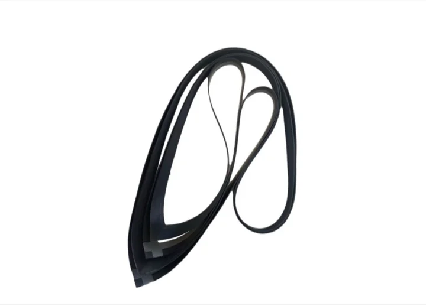
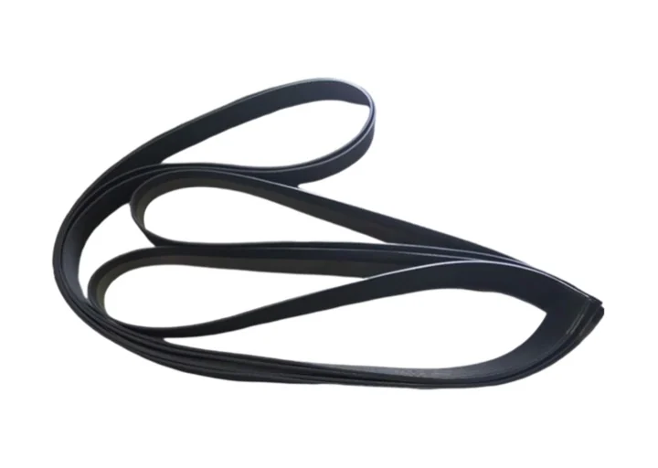
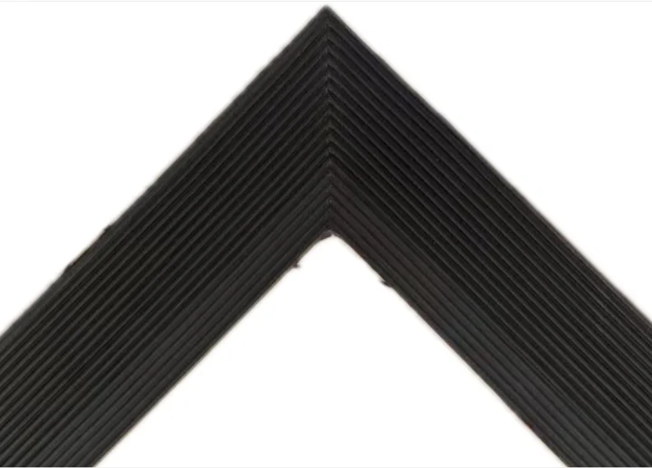
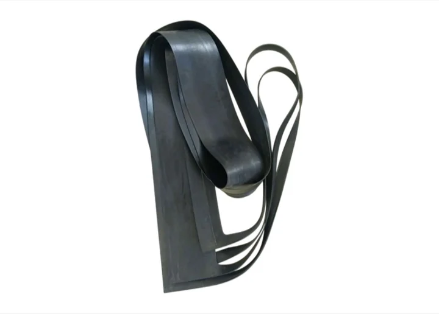
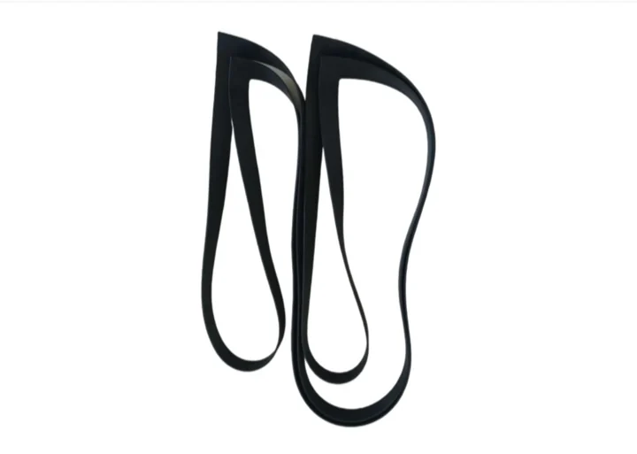
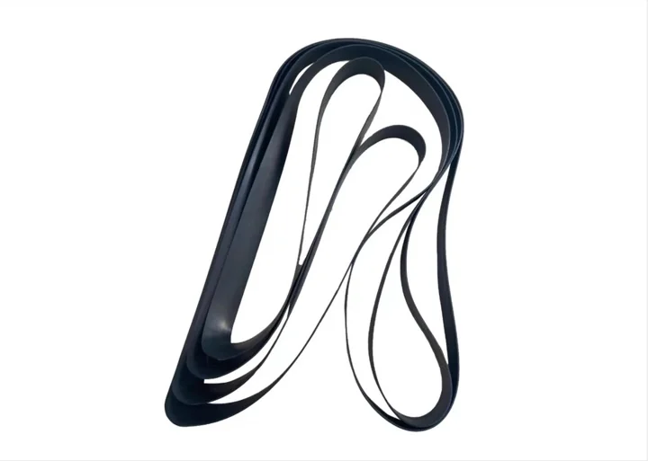

用途と改造
Metatecno は電解槽セルを製造し、保守および膜極間距離改造向けのシール部品を供給します。DD350、UHDE、INEOS、Asahi Kasei、BlueStar、Chlorine Engineers などへの適用は、図面と運転条件で確認します。

工業用ゴム・フッ素樹脂シール, 電解槽セルとシール製品.





電解槽セルとシール製品
| 製品コード | 図面指定 / プロジェクトコード |
|---|---|
| 用途 | クロールアルカリ用イオン膜電解槽向けシールまたはフッ素樹脂部品 |
| 対応電解槽 | DD350、UHDE、INEOS、Asahi Kasei、BlueStar、Chlorine Engineers など。図面確認後に適用可否を判断 |
| 材料 | EPDM / FKM / NBR / PTFE / PFA / FEP / PVDF または媒体に応じたゴム・フッ素樹脂材料 |
| 硬度 | ゴム部品は通常 60-75 Shore A。図面と配合で確認 |
| 使用温度 | ゴム部品は通常 -40 C から +120 C。フッ素樹脂は材料により異なる |
| 化学媒体 | 塩水、苛性ソーダ、塩素側および腐食性化学媒体 |
| 寸法 | お客様の図面、サンプル、または改造要求に基づく |
| 製作範囲 | 新規電解槽セル、保守用シール部品、膜極間距離改造案件 |
| 品質書類 | 注文図面と品質合意に基づく検査記録 |
Metatecno は電解槽セルを製造し、保守および膜極間距離改造向けのシール部品を供給します。DD350、UHDE、INEOS、Asahi Kasei、BlueStar、Chlorine Engineers などへの適用は、図面と運転条件で確認します。
材料は媒体、温度、圧力、取付位置、保守周期により選定します。EPDM、FKM、NBR、フッ素樹脂材料を実際の条件で評価します。
シール面を清掃し、芯出しを確認し、ガスケットをねじらず、ボルトを対角順に締付け、初期圧縮後にトルクを再確認してください。
外観、重要寸法、材料、必要に応じた硬度、包装、ロット追跡性を通常確認します。
製品はサイズと案件要求に応じて PE 袋、段ボール、または輸出用木箱で包装します。
図面、サンプル写真、材料、数量、媒体、温度、圧力、運転条件をお送りください。
注目製品
Metatecno